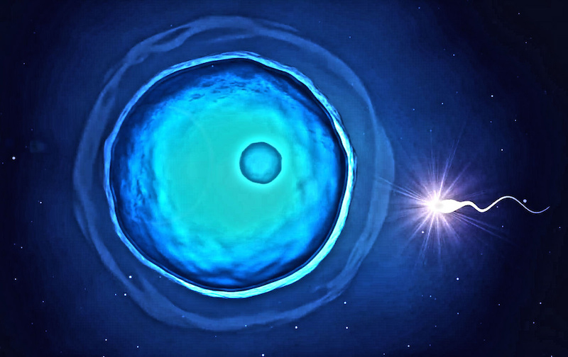
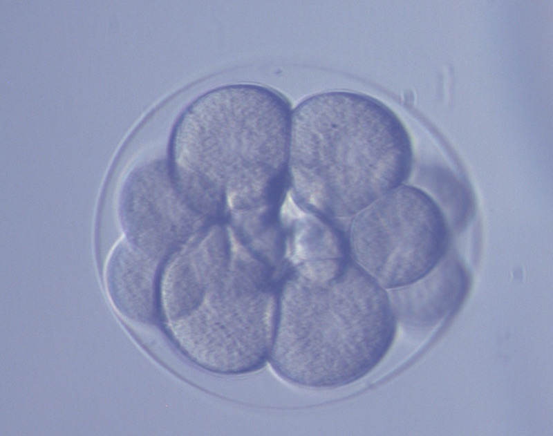

Image by Hans Hillewaert [CC BY-SA 4.0]
Sea urchins are weird, spiky, and at first glance, don’t seem all that interesting. But beneath that uncharismatic appearance is a creature that has been central to scientific discoveries? that changed the way we understand the natural world. In part 1 of the urchin’s tale, I highlighted what these unassuming critters have taught us about the processes that shape ecosystems. In part 2, I will explore their role in developing our understanding of the fundamental processes that shape us, as well as the other animals that share our world.
How to make a baby
Today, most people know how babies are made. The iconic image of a single sperm merging with an egg to form a new life permeates popular culture, from movies, to art, to crude scribbles on high school bathroom walls.
But this wasn’t always the case. Throughout much of the 18th and 19th centuries, people didn’t quite know how life began. After all, sperm and egg cells are really tiny, and they usually encounter each other deep within the human body, which is definitely not the easiest place to try and spy on such secret meetings.

An artist’s rendition of a sperm meeting an egg. Image from quapan [CC-BY 2.0]
Enter the sea urchin. Although sea urchins look nothing like us, their sperm and eggs are really similar to those of humans in size and shape, making them a good analog to study. But unlike human eggs and sperm, sea urchin eggs and sperm are not shy at all - they boldly meet out in the open. When it is time to make babies, sea urchins spawn tens of thousands of eggs and sperm directly into the water. This made it really easy for early scientists to collect and observe these sperm and egg cells in the lab. It also helped that sea urchin eggs are large, transparent, and easy to see under a simple light microscope.
So it’s really not at all surprising that our earliest insights into fertilization came from sea urchins. In 1877, the German zoologist Oscar Hertwig first published his observations of the fusion of sea urchin sperm and eggs. In doing so, he also opened the floodgates for scientists to study cellular processes in sea urchins. This paved the way for other fundamental discoveries.
One such major discovery came from Theodor Boveri, who observed sea urchin fertilization and found that the sperm and egg each contain half a set of chromosomes, which add up to a full set when the cells fuse together. Boveri’s findings helped us to understand that genes are passed from parent to child on these chromosomes, and his insights helped to develop the chromosome theory of inheritance, which is a foundation of our modern understanding of genetics.
From one cell to many
The process of baby-making doesn’t end when sperm and egg meet. The fertilized egg that is produced must somehow turn from a single cell into millions of specialized cells that are precisely arranged into a head, body, arms and legs (if it is a human) or a round spiky body with wiggly tube feet (if it is an urchin). How does it do that?
Again, sea urchins made it easy for scientists to study these processes of early development. Like the sperm and eggs, sea urchin embryos are easy to keep in the lab and to observe under the microscope. Scientists could watch as the single cell divided into two, then four, then eight, then sixteen… (you can watch the process here). They tracked each of these cells over time to find out which part of the sea urchin they eventually became. And they asked the question: how do cells that start out identical end up as different body parts, and how do they know which part they should be?

Purple sea urchin embryo at the 16-cell stage, about 4 hours after the sperm has fertilized the egg. Image courtesy of the Lowe lab at Hopkins Marine Station.
Embryologists tried to answer this question by observing and experimenting with the sea urchin embryos. They moved cells from one part of the embryo to another to ask the question: will these cells adapt to their new positions, or will they start forming body parts in the wrong place?
The answer, as with many things, was “it depends”. All the cells in the embryo contain the same set of DNA, and they switch on different parts of that DNA in order to develop into different body parts. During this process, cells also talk to each other. Therefore, a cell may decide which parts of its DNA to switch on based on the messages that it gets from its neighbours.
So, if a transplanted cell has not fully committed to which parts of its DNA to turn on, it might be influenced by its new neighbours, and adapt to its new position. But if it has already turned on a specific set of DNA, its fate may be decided regardless of where its new position is. For example, when researchers transplanted a cell in a 4-hour-old (16-cell) embryo, they found that it started to form an extra digestive tract. As time passes and the embryo’s cells grow and divide, they become more and more locked into their fates.
With the advent of new tools and technologies in genomics and cell biology, researchers have begun to investigate the mechanisms of all these developmental processes: which parts of DNA are switched on in different cells, how those switches bring about changes in the cell, and how neighbouring cells send signals to each other, to name a few examples. Like the process of fertilization, these developmental processes aren’t unique to sea urchins – they are fundamental processes of life, including our own.
Lessons from an urchin
By serving as a study animal for early zoologists, the sea urchin has taught us a lot about how life begins and develops, and has inspired a greater understanding of genetics and cell biology. From part 1 of this series, we also know that the sea urchin has also taught us about the processes that shape ecosystems. All of these incredible insights were achieved by scientists who were observant, open-minded, and saw the value in taking a closer look at this strange-looking ball of spines.
So, the next time you encounter a less-than-charismatic critter, don’t just pass it by. If we ask the right questions, even the humblest of creatures may be able to teach us the secrets of the world.
References:
Ernst S.G. 2011. Offerings from an urchin. Developmental Biology 358(2):285-294 Ransick A., Davidson E.H. 1993. A complete second gut induced by transplanted micromeres in the sea urchin embryo. Science 259(5098):1134-1138
{kind=link}